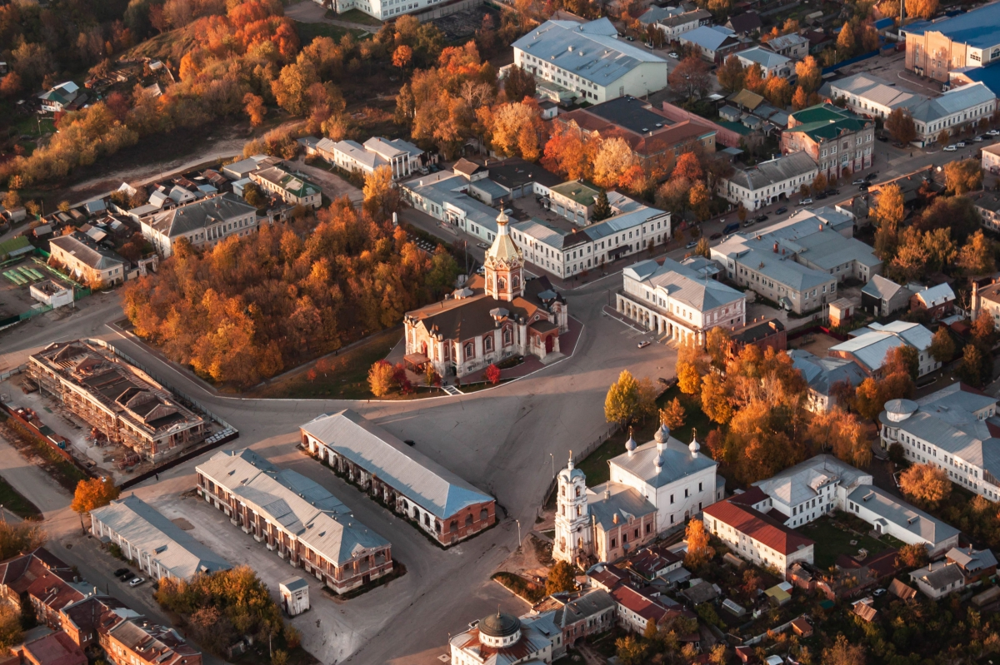

Касимов
Касимов – небольшой городок, раскинувшийся на берегу Оки в 170 километрах от Рязани. Основанный Юрием Долгоруким в далеком 1152 году, через 300 лет он был пожалован Василием Тёмным татарскому царевичу Касиму. Здесь есть и невообразимая для уездного городка архитектура, и многочисленные холмы, с которых открывается потрясающие виды на заокские просторы, и тишина, прерываемая только колокольным звоном...

Дом Алянчикова — это исторический особняк, ранее принадлежавший купеческому роду Алянчиковых. Ныне дом купца Алянчикова является главным зданием Касимовского историко-культурного музея-заповедника — в доме Алянчикова демонстрируется историческая музейная экспозиция. Спроектировал дом Гагин Иван Сергеевич - провинциальный архитектор, историк, археолог, механик, изобретатель и топограф.
Касимовский музей колоколов был открыт 31 октября 2014 года. С тех пор с коллекцией, которую составляют более 900 экспонатов, познакомились тысячи гостей – как из Касимова, так и из многих регионов нашей страны, и из-за рубежа. Еще до появления заводов по изготовлению колокольчиков, мастера, которых, как говорят, было на Касимовской земле более пятидесяти, отливали колокольчики кустарным способом.